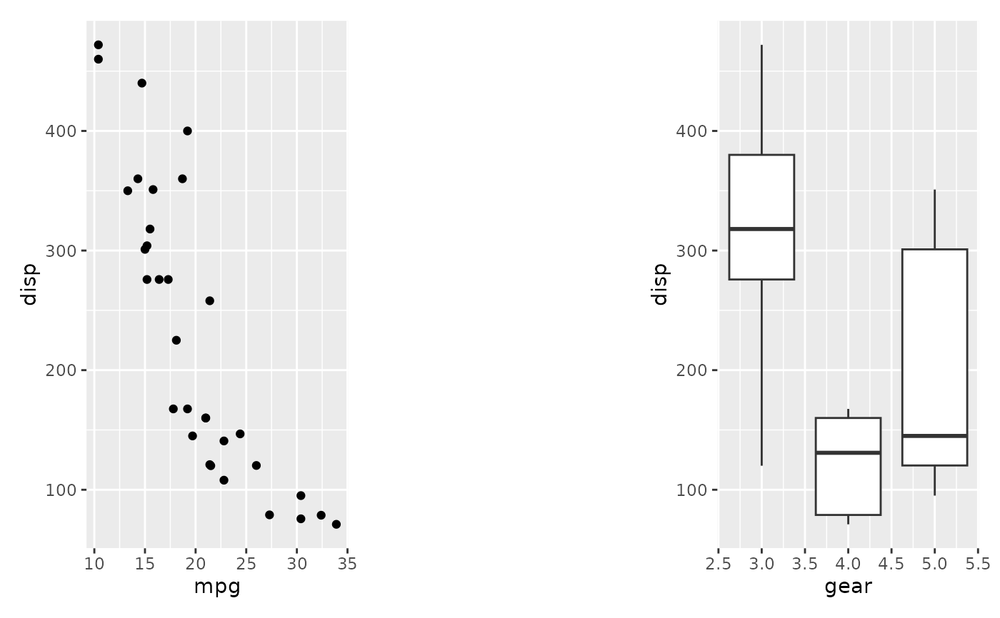
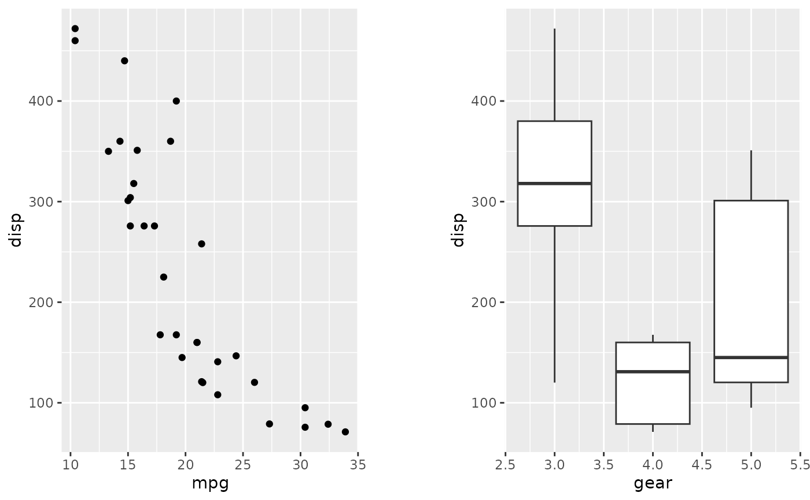

This simple wrapper creates an empty transparent patch that can be added to
push your other plots apart. The patch responds to adding
theme() specifications, but only plot.background will
have an effect.
Examples
library(ggplot2)
p1 <- ggplot(mtcars) + geom_point(aes(mpg, disp))
p2 <- ggplot(mtcars) + geom_boxplot(aes(gear, disp, group = gear))
p1 + plot_spacer() + p2

# To have more control over spacing, you can use the `plot.margin`
# parameter for `theme()` on each individual plot.
(p1 + theme(plot.margin = unit(c(0,30,0,0), "pt"))) +
(p2 + theme(plot.margin = unit(c(0,0,0,30), "pt")))
